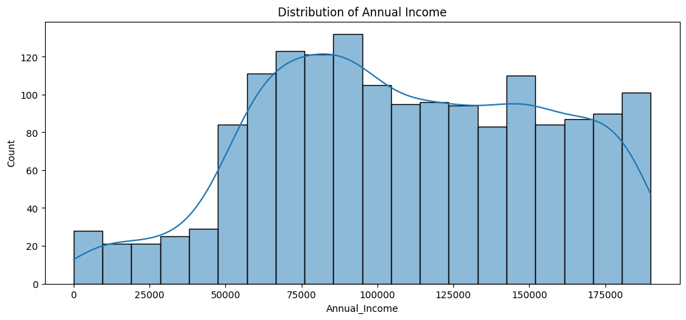
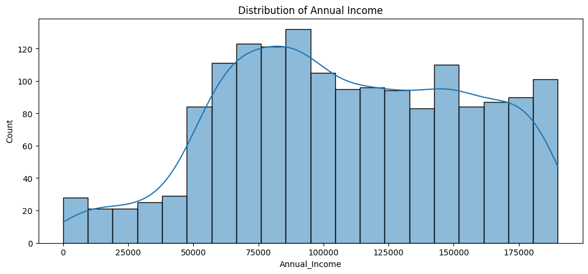
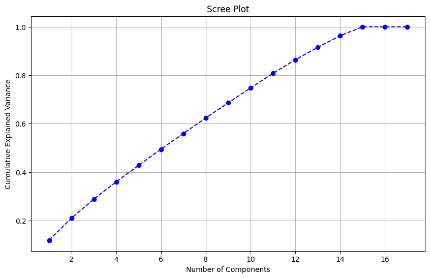
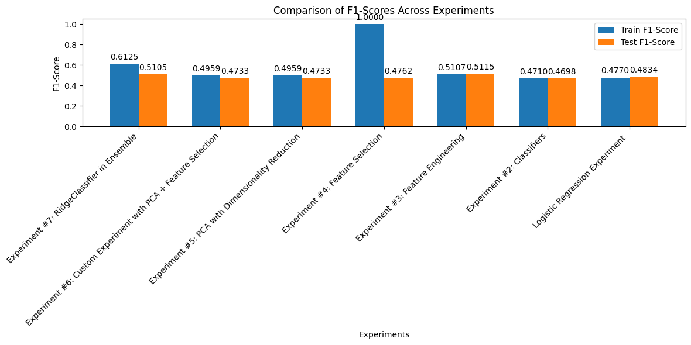

Data Cleaning#
import csv
# Load CSV data into a list of dictionaries
file_path = 'Customers.csv'
with open(file_path, 'r') as file:
reader = csv.DictReader(file)
data = [row for row in reader]
# Function to handle missing values
def handle_missing_values(data, numerical_columns):
for row in data:
for col in row:
if row[col] == "" or row[col] is None:
if col in numerical_columns:
# Replace with column mean (calculated separately)
row[col] = numerical_means[col]
else:
# Replace with column mode (calculated separately)
row[col] = column_modes[col]
# Calculate means for numerical columns
numerical_columns = ['Age', 'Annual Income ($)', 'Spending Score (1-100)', 'Work Experience', 'Family Size']
numerical_means = {}
for col in numerical_columns:
values = [float(row[col]) for row in data if row[col] not in ["", None]]
numerical_means[col] = sum(values) / len(values)
# Calculate modes for categorical columns
categorical_columns = ['Gender', 'Profession']
column_modes = {}
for col in categorical_columns:
values = [row[col] for row in data if row[col] not in ["", None]]
column_modes[col] = max(set(values), key=values.count)
# Remove outliers using the IQR method
def remove_outliers(data, column):
values = [float(row[column]) for row in data if row[column] not in ["", None]]
Q1 = sorted(values)[len(values) // 4]
Q3 = sorted(values)[3 * len(values) // 4]
IQR = Q3 - Q1
lower_bound = Q1 - 1.5 * IQR
upper_bound = Q3 + 1.5 * IQR
return [row for row in data if row[column] not in ["", None] and lower_bound <= float(row[column]) <= upper_bound]
# Apply outlier removal
for col in numerical_columns:
data = remove_outliers(data, col)
# Filter rows based on a condition (e.g., Age > 18)
data = [row for row in data if float(row['Age']) > 18]
# Save the cleaned data to a new CSV file
cleaned_file_path = 'Cleaned_Customers_Raw.csv'
with open(cleaned_file_path, 'w', newline='') as file:
writer = csv.DictWriter(file, fieldnames=data[0].keys())
writer.writeheader()
writer.writerows(data)
print("Data cleaning completed and saved to", cleaned_file_path)
Data cleaning completed and saved to Cleaned_Customers_Raw.csv
3NF#
import sqlite3
import csv
# File path for the cleaned data
cleaned_file_path = 'Cleaned_Customers_Raw.csv'
# Load cleaned data into a list
with open(cleaned_file_path, 'r') as file:
reader = csv.DictReader(file)
cleaned_data = [row for row in reader]
# Normalize the data
# Extract unique professions with work experience
professions = list(set((row['Profession'], str(row['Work Experience'])) for row in cleaned_data))
# Create mappings for professions
profession_map = {profession: idx + 1 for idx, profession in enumerate(professions)}
# Create normalized tables
customers = [
{
'CustomerID': row['CustomerID'],
'Gender': row['Gender'],
'Age': row['Age'],
'Family_Size': row['Family Size'],
'ProfessionID': profession_map[(row['Profession'], str(row['Work Experience']))],
}
for row in cleaned_data
]
profession_table = [
{'ProfessionID': idx, 'Profession': profession, 'Work_Experience': work_exp}
for (profession, work_exp), idx in profession_map.items()
]
finances = [
{
'CustomerID': row['CustomerID'],
'Annual_Income': row['Annual Income ($)'],
'Spending_Score': row['Spending Score (1-100)'],
}
for row in cleaned_data
]
# Connect to SQLite
db_path = 'Customers_3NF_new.db'
conn = sqlite3.connect(db_path)
cursor = conn.cursor()
# Create tables
cursor.execute("""
CREATE TABLE IF NOT EXISTS Customers (
CustomerID INTEGER PRIMARY KEY,
Gender TEXT,
Age INTEGER,
Family_Size INTEGER,
ProfessionID INTEGER,
FOREIGN KEY (ProfessionID) REFERENCES Professions(ProfessionID)
);
""")
cursor.execute("""
CREATE TABLE IF NOT EXISTS Professions (
ProfessionID INTEGER PRIMARY KEY,
Profession TEXT,
Work_Experience INTEGER
);
""")
cursor.execute("""
CREATE TABLE IF NOT EXISTS Finances (
CustomerID INTEGER PRIMARY KEY,
Annual_Income REAL,
Spending_Score INTEGER,
FOREIGN KEY (CustomerID) REFERENCES Customers(CustomerID)
);
""")
# Insert data into Professions
cursor.executemany(
"""
INSERT OR IGNORE INTO Professions (
ProfessionID, Profession, Work_Experience
) VALUES (?, ?, ?);
""",
[(row['ProfessionID'], row['Profession'], row['Work_Experience']) for row in profession_table]
)
# Insert data into Customers
cursor.executemany(
"""
INSERT INTO Customers (
CustomerID, Gender, Age, Family_Size, ProfessionID
) VALUES (?, ?, ?, ?, ?);
""",
[
(row['CustomerID'], row['Gender'], row['Age'], row['Family_Size'], row['ProfessionID'])
for row in customers
]
)
# Insert data into Finances
cursor.executemany(
"""
INSERT INTO Finances (
CustomerID, Annual_Income, Spending_Score
) VALUES (?, ?, ?);
""",
[
(row['CustomerID'], row['Annual_Income'], row['Spending_Score'])
for row in finances
]
)
# Commit changes and close the connection
conn.commit()
conn.close()
print("Data has been normalized into 3NF and stored in SQLite database at:", db_path)
Data has been normalized into 3NF and stored in SQLite database at: Customers_3NF_new.db
SQL join statement to fetch data from database and insert into Pandas.#
import sqlite3
import pandas as pd
# Path to the SQLite database
db_path = 'Customers_3NF_new.db'
# Connect to the SQLite database
conn = sqlite3.connect(db_path)
# SQL query to join the tables and fetch data
query = """
SELECT
c.CustomerID,
c.Gender,
c.Age,
c.Family_Size,
p.Profession,
p.Work_Experience,
f.Annual_Income,
f.Spending_Score
FROM
Customers c
JOIN
Professions p ON c.ProfessionID = p.ProfessionID
JOIN
Finances f ON c.CustomerID = f.CustomerID;
"""
# Execute the query and load the result into a Pandas DataFrame
df = pd.read_sql_query(query, conn)
# Close the database connection
conn.close()
# Display the DataFrame
print(df.head())
CustomerID Gender Age Family_Size Profession Work_Experience \
0 1 Male 19 4 Healthcare 1
1 2 Male 21 3 Engineer 3
2 3 Female 20 1 Engineer 1
3 4 Female 23 2 Lawyer 0
4 5 Female 31 6 Entertainment 2
Annual_Income Spending_Score
0 15000.0 39
1 35000.0 81
2 86000.0 6
3 59000.0 77
4 38000.0 40
Stratification#
from sklearn.model_selection import train_test_split
import matplotlib.pyplot as plt
import seaborn as sns
# Analyze the distribution of categorical attributes
print("Gender Distribution:")
print(df['Gender'].value_counts())
print("\nProfession Distribution:")
print(df['Profession'].value_counts())
# Analyze the distribution of continuous attributes
plt.figure(figsize=(12, 5))
sns.histplot(df['Spending_Score'], kde=True, bins=20)
plt.title('Distribution of Spending Score')
plt.show()
plt.figure(figsize=(12, 5))
sns.histplot(df['Annual_Income'], kde=True, bins=20)
plt.title('Distribution of Annual Income')
plt.show()
# Decide on stratification (e.g., by Gender or Profession)
# In this example, we'll stratify by Gender if needed
X = df.drop(columns=['Spending_Score']) # Features
y = df['Spending_Score'] # Target variable
# Perform train/test split
X_train, X_test, y_train, y_test = train_test_split(
X, y, test_size=0.2, random_state=42, stratify=df['Gender']
)
# Verify the stratification
print("\nGender Distribution in Training Set:")
print(X_train['Gender'].value_counts())
print("\nGender Distribution in Test Set:")
print(X_test['Gender'].value_counts())
Gender Distribution:
Gender
Female 974
Male 666
Name: count, dtype: int64
Profession Distribution:
Profession
Artist 503
Healthcare 280
Entertainment 194
Engineer 155
Executive 123
Doctor 123
Lawyer 116
Marketing 68
Homemaker 48
30
Name: count, dtype: int64
 

Gender Distribution in Training Set:
Gender
Female 779
Male 533
Name: count, dtype: int64
Gender Distribution in Test Set:
Gender
Female 195
Male 133
Name: count, dtype: int64
Y-Profile , Correlation Matrix, Data Cleanup tasks#
!pip install ydata-profiling
# Perform one-hot encoding for categorical features: Gender and Profession
encoded_df = pd.get_dummies(df, columns=['Gender', 'Profession'], dtype=int)
# Display the first few rows of the transformed DataFrame
print(encoded_df.head())
CustomerID Age Family_Size Work_Experience Annual_Income \
0 1 19 4 1 15000.0
1 2 21 3 3 35000.0
2 3 20 1 1 86000.0
3 4 23 2 0 59000.0
4 5 31 6 2 38000.0
Spending_Score Gender_Female Gender_Male Profession_ Profession_Artist \
0 39 0 1 0 0
1 81 0 1 0 0
2 6 1 0 0 0
3 77 1 0 0 0
4 40 1 0 0 0
Profession_Doctor Profession_Engineer Profession_Entertainment \
0 0 0 0
1 0 1 0
2 0 1 0
3 0 0 0
4 0 0 1
Profession_Executive Profession_Healthcare Profession_Homemaker \
0 0 1 0
1 0 0 0
2 0 0 0
3 0 0 0
4 0 0 0
Profession_Lawyer Profession_Marketing
0 0 0
1 0 0
2 0 0
3 1 0
4 0 0
import pandas as pd
import seaborn as sns
import matplotlib.pyplot as plt
from ydata_profiling import ProfileReport
# Generate a profile report using ydata-profiling
profile = ProfileReport(encoded_df, title="Customer Data Profiling Report", explorative=True)
profile.to_file("Customer_Data_Profile.html")
# Display the correlation matrix
correlation_matrix = encoded_df.corr()
# Plot the correlation heatmap
plt.figure(figsize=(12, 8))
sns.heatmap(correlation_matrix, annot=True, fmt=".2f", cmap="coolwarm", cbar=True)
plt.title("Correlation Matrix of Customer Data")
plt.show()
# Missing values summary
missing_values = encoded_df.isnull().sum()
# Identify capped values by analyzing percentiles
capped_columns = {}
for column in encoded_df.select_dtypes(include=['float64', 'int64']).columns:
lower_bound = encoded_df[column].quantile(0.01)
upper_bound = encoded_df[column].quantile(0.99)
capped_count = ((encoded_df[column] < lower_bound) | (encoded_df[column] > upper_bound)).sum()
if capped_count > 0:
capped_columns[column] = capped_count
# Observations and cleanup tasks
observations = {
"missing_values": missing_values[missing_values > 0].to_dict(),
"capped_values": capped_columns,
"strong_correlations": correlation_matrix.unstack()
.sort_values(ascending=False)
.loc[lambda x: (x > 0.7) & (x < 1.0)].to_dict(),
"weak_correlations": correlation_matrix.unstack()
.sort_values()
.loc[lambda x: (x < 0.3) & (x > -0.3)].to_dict(),
}
# Data cleanup tasks
data_cleanup_tasks = []
# Missing values
if observations['missing_values']:
data_cleanup_tasks.append("Handle missing values using imputation or removal.")
# Capped values
if observations['capped_values']:
data_cleanup_tasks.append("Investigate capped values for potential outliers.")
# Correlation insights
if observations['strong_correlations']:
data_cleanup_tasks.append("Analyze highly correlated features for redundancy.")
# Print observations and cleanup tasks
print("\nObservations:")
print(observations)
print("\nData Cleanup Tasks:")
print(data_cleanup_tasks)

Observations:
{'missing_values': {}, 'capped_values': {'CustomerID': 34, 'Age': 17, 'Family_Size': 2, 'Work_Experience': 15, 'Annual_Income': 34, 'Spending_Score': 30}, 'strong_correlations': {}, 'weak_correlations': {('Profession_Entertainment', 'Profession_Artist'): -0.24362422953747842, ('Profession_Artist', 'Profession_Entertainment'): -0.24362422953747842, ('Profession_Engineer', 'Profession_Artist'): -0.2148851393943457, ('Profession_Artist', 'Profession_Engineer'): -0.2148851393943457, ('Profession_Doctor', 'Profession_Artist'): -0.18939282650037503, ('Profession_Artist', 'Profession_Doctor'): -0.18939282650037503, ('Profession_Executive', 'Profession_Artist'): -0.18939282650037476, ('Profession_Artist', 'Profession_Executive'): -0.18939282650037476, ('Profession_Lawyer', 'Profession_Artist'): -0.18350177575497406, ('Profession_Artist', 'Profession_Lawyer'): -0.18350177575497406, ('Profession_Entertainment', 'Profession_Healthcare'): -0.16619818626143104, ('Profession_Healthcare', 'Profession_Entertainment'): -0.16619818626143104, ('Profession_Engineer', 'Profession_Healthcare'): -0.1465926459354119, ('Profession_Healthcare', 'Profession_Engineer'): -0.1465926459354119, ('Profession_Artist', 'Profession_Marketing'): -0.1383349589930075, ('Profession_Marketing', 'Profession_Artist'): -0.1383349589930075, ('Profession_Executive', 'Profession_Healthcare'): -0.1292020268880766, ('Profession_Healthcare', 'Profession_Executive'): -0.1292020268880766, ('Profession_Healthcare', 'Profession_Doctor'): -0.12920202688807644, ('Profession_Doctor', 'Profession_Healthcare'): -0.12920202688807644, ('Profession_Lawyer', 'Profession_Healthcare'): -0.12518320679403877, ('Profession_Healthcare', 'Profession_Lawyer'): -0.12518320679403877, ('Profession_Entertainment', 'Profession_Engineer'): -0.1183366691009724, ('Profession_Engineer', 'Profession_Entertainment'): -0.1183366691009724, ('Profession_Artist', 'Profession_Homemaker'): -0.11549225130102607, ('Profession_Homemaker', 'Profession_Artist'): -0.11549225130102607, ('Profession_Entertainment', 'Profession_Executive'): -0.10429812086048094, ('Profession_Executive', 'Profession_Entertainment'): -0.10429812086048094, ('Profession_Doctor', 'Profession_Entertainment'): -0.10429812086048076, ('Profession_Entertainment', 'Profession_Doctor'): -0.10429812086048076, ('Profession_Lawyer', 'Profession_Entertainment'): -0.10105393503785771, ('Profession_Entertainment', 'Profession_Lawyer'): -0.10105393503785771, ('Profession_Marketing', 'Profession_Healthcare'): -0.09437082397278733, ('Profession_Healthcare', 'Profession_Marketing'): -0.09437082397278733, ('Profession_Doctor', 'Profession_Engineer'): -0.09199461105417248, ('Profession_Engineer', 'Profession_Doctor'): -0.09199461105417248, ('Profession_Engineer', 'Profession_Executive'): -0.0919946110541724, ('Profession_Executive', 'Profession_Engineer'): -0.0919946110541724, ('Profession_Artist', 'Profession_'): -0.09079280832474923, ('Profession_', 'Profession_Artist'): -0.09079280832474923, ('Profession_Engineer', 'Profession_Lawyer'): -0.08913312505157313, ('Profession_Lawyer', 'Profession_Engineer'): -0.08913312505157313, ('Profession_Executive', 'Profession_Doctor'): -0.08108108108108111, ('Profession_Doctor', 'Profession_Executive'): -0.08108108108108111, ('Profession_Healthcare', 'Profession_Homemaker'): -0.07878774098094006, ('Profession_Homemaker', 'Profession_Healthcare'): -0.07878774098094006, ('Profession_Executive', 'Profession_Lawyer'): -0.07855905967210412, ('Profession_Lawyer', 'Profession_Executive'): -0.07855905967210412, ('Profession_Doctor', 'Profession_Lawyer'): -0.07855905967210411, ('Profession_Lawyer', 'Profession_Doctor'): -0.07855905967210411, ('Profession_Entertainment', 'Profession_Marketing'): -0.07618069036133118, ('Profession_Marketing', 'Profession_Entertainment'): -0.07618069036133118, ('Profession_Marketing', 'Profession_Engineer'): -0.0671940483856256, ('Profession_Engineer', 'Profession_Marketing'): -0.0671940483856256, ('Profession_Homemaker', 'Profession_Entertainment'): -0.0636012725889572, ('Profession_Entertainment', 'Profession_Homemaker'): -0.0636012725889572, ('Profession_Healthcare', 'Profession_'): -0.06193801042615005, ('Profession_', 'Profession_Healthcare'): -0.06193801042615005, ('Profession_Marketing', 'Profession_Executive'): -0.059222665576712616, ('Profession_Executive', 'Profession_Marketing'): -0.059222665576712616, ('Profession_Marketing', 'Profession_Doctor'): -0.059222665576712526, ('Profession_Doctor', 'Profession_Marketing'): -0.059222665576712526, ('Profession_Lawyer', 'Profession_Marketing'): -0.05738054866744505, ('Profession_Marketing', 'Profession_Lawyer'): -0.05738054866744505, ('Profession_Engineer', 'Profession_Homemaker'): -0.05609855945725368, ('Profession_Homemaker', 'Profession_Engineer'): -0.05609855945725368, ('Profession_Lawyer', 'Work_Experience'): -0.05385427820746143, ('Work_Experience', 'Profession_Lawyer'): -0.05385427820746143, ('Work_Experience', 'Profession_Entertainment'): -0.051811596186293475, ('Profession_Entertainment', 'Work_Experience'): -0.051811596186293475, ('Profession_Entertainment', 'Profession_'): -0.04999935568255757, ('Profession_', 'Profession_Entertainment'): -0.04999935568255757, ('Profession_Homemaker', 'Profession_Executive'): -0.04944345973925548, ('Profession_Executive', 'Profession_Homemaker'): -0.04944345973925548, ('Profession_Doctor', 'Profession_Homemaker'): -0.04944345973925535, ('Profession_Homemaker', 'Profession_Doctor'): -0.04944345973925535, ('Gender_Male', 'Profession_Artist'): -0.049184923307339354, ('Profession_Artist', 'Gender_Male'): -0.049184923307339354, ('Profession_Lawyer', 'Profession_Homemaker'): -0.047905524349967796, ('Profession_Homemaker', 'Profession_Lawyer'): -0.047905524349967796, ('Profession_', 'Profession_Engineer'): -0.04410119032853022, ('Profession_Engineer', 'Profession_'): -0.04410119032853022, ('Profession_Artist', 'Annual_Income'): -0.04005670448594662, ('Annual_Income', 'Profession_Artist'): -0.04005670448594662, ('Profession_', 'Profession_Doctor'): -0.038869365801156616, ('Profession_Doctor', 'Profession_'): -0.038869365801156616, ('Profession_Executive', 'Profession_'): -0.03886936580115658, ('Profession_', 'Profession_Executive'): -0.03886936580115658, ('Spending_Score', 'Profession_Homemaker'): -0.03879162234639323, ('Profession_Homemaker', 'Spending_Score'): -0.03879162234639323, ('Profession_Lawyer', 'Profession_'): -0.037660336871142085, ('Profession_', 'Profession_Lawyer'): -0.037660336871142085, ('Profession_Marketing', 'Profession_Homemaker'): -0.03611413960015414, ('Profession_Homemaker', 'Profession_Marketing'): -0.03611413960015414, ('Family_Size', 'Profession_Artist'): -0.03525331154086917, ('Profession_Artist', 'Family_Size'): -0.03525331154086917, ('CustomerID', 'Profession_Engineer'): -0.03434425388713896, ('Profession_Engineer', 'CustomerID'): -0.03434425388713896, ('Profession_Lawyer', 'Family_Size'): -0.034289226838935274, ('Family_Size', 'Profession_Lawyer'): -0.034289226838935274, ('Gender_Male', 'Profession_Homemaker'): -0.033093360765781094, ('Profession_Homemaker', 'Gender_Male'): -0.033093360765781094, ('Age', 'Profession_Healthcare'): -0.032862582155324116, ('Profession_Healthcare', 'Age'): -0.032862582155324116, ('Gender_Female', 'Work_Experience'): -0.03223717258339499, ('Work_Experience', 'Gender_Female'): -0.03223717258339499, ('Profession_Lawyer', 'CustomerID'): -0.02961839607677899, ('CustomerID', 'Profession_Lawyer'): -0.02961839607677899, ('CustomerID', 'Profession_Healthcare'): -0.029526779424358243, ('Profession_Healthcare', 'CustomerID'): -0.029526779424358243, ('Profession_Doctor', 'Gender_Female'): -0.028519196370344644, ('Gender_Female', 'Profession_Doctor'): -0.028519196370344644, ('Profession_', 'Profession_Marketing'): -0.028390685241589882, ('Profession_Marketing', 'Profession_'): -0.028390685241589882, ('Family_Size', 'Profession_Engineer'): -0.028262355559513497, ('Profession_Engineer', 'Family_Size'): -0.028262355559513497, ('Spending_Score', 'Gender_Male'): -0.02673036211500841, ('Gender_Male', 'Spending_Score'): -0.02673036211500841, ('Profession_', 'Gender_Female'): -0.026100679700286494, ('Gender_Female', 'Profession_'): -0.026100679700286494, ('Family_Size', 'Gender_Female'): -0.024923903112075787, ('Gender_Female', 'Family_Size'): -0.024923903112075787, ('Spending_Score', 'Profession_Lawyer'): -0.02405009031100866, ('Profession_Lawyer', 'Spending_Score'): -0.02405009031100866, ('Spending_Score', 'Profession_'): -0.023855972226043094, ('Profession_', 'Spending_Score'): -0.023855972226043094, ('Profession_Homemaker', 'Age'): -0.023766470783746496, ('Age', 'Profession_Homemaker'): -0.023766470783746496, ('Profession_Homemaker', 'Profession_'): -0.023702643051318466, ('Profession_', 'Profession_Homemaker'): -0.023702643051318466, ('Age', 'Profession_Marketing'): -0.02339360470377857, ('Profession_Marketing', 'Age'): -0.02339360470377857, ('Age', 'Profession_Executive'): -0.022534761902761997, ('Profession_Executive', 'Age'): -0.022534761902761997, ('Profession_Engineer', 'Gender_Female'): -0.0214540289150075, ('Gender_Female', 'Profession_Engineer'): -0.0214540289150075, ('Profession_Entertainment', 'Gender_Female'): -0.020057147644092544, ('Gender_Female', 'Profession_Entertainment'): -0.020057147644092544, ('Spending_Score', 'Work_Experience'): -0.018824482378749105, ('Work_Experience', 'Spending_Score'): -0.018824482378749105, ('Age', 'Profession_Lawyer'): -0.018675028658801666, ('Profession_Lawyer', 'Age'): -0.018675028658801666, ('Profession_Marketing', 'Annual_Income'): -0.01782641321941344, ('Annual_Income', 'Profession_Marketing'): -0.01782641321941344, ('Spending_Score', 'Age'): -0.016144032024483515, ('Age', 'Spending_Score'): -0.016144032024483515, ('Profession_Doctor', 'Spending_Score'): -0.016095524135748298, ('Spending_Score', 'Profession_Doctor'): -0.016095524135748298, ('Profession_Lawyer', 'Gender_Male'): -0.015048435397117236, ('Gender_Male', 'Profession_Lawyer'): -0.015048435397117236, ('Profession_Executive', 'Gender_Female'): -0.01437744610405804, ('Gender_Female', 'Profession_Executive'): -0.01437744610405804, ('Age', 'Gender_Female'): -0.01357427067377912, ('Gender_Female', 'Age'): -0.01357427067377912, ('Spending_Score', 'Profession_Engineer'): -0.013271776701398228, ('Profession_Engineer', 'Spending_Score'): -0.013271776701398228, ('Profession_Executive', 'Spending_Score'): -0.012414156692094341, ('Spending_Score', 'Profession_Executive'): -0.012414156692094341, ('Profession_Healthcare', 'Work_Experience'): -0.011460684949250566, ('Work_Experience', 'Profession_Healthcare'): -0.011460684949250566, ('Profession_Marketing', 'Family_Size'): -0.011135488274719538, ('Family_Size', 'Profession_Marketing'): -0.011135488274719538, ('Annual_Income', 'Gender_Female'): -0.011103332611814733, ('Gender_Female', 'Annual_Income'): -0.011103332611814733, ('Profession_Healthcare', 'Gender_Female'): -0.010864974138994572, ('Gender_Female', 'Profession_Healthcare'): -0.010864974138994572, ('Profession_Marketing', 'Spending_Score'): -0.010510776261790722, ('Spending_Score', 'Profession_Marketing'): -0.010510776261790722, ('Spending_Score', 'Family_Size'): -0.010190138593203219, ('Family_Size', 'Spending_Score'): -0.010190138593203219, ('CustomerID', 'Gender_Female'): -0.010110791200527904, ('Gender_Female', 'CustomerID'): -0.010110791200527904, ('Spending_Score', 'Profession_Healthcare'): -0.009973540482850858, ('Profession_Healthcare', 'Spending_Score'): -0.009973540482850858, ('Profession_Homemaker', 'Annual_Income'): -0.006748705165016471, ('Annual_Income', 'Profession_Homemaker'): -0.006748705165016471, ('Work_Experience', 'Profession_Engineer'): -0.006377722061069962, ('Profession_Engineer', 'Work_Experience'): -0.006377722061069962, ('Age', 'Profession_Artist'): -0.005849516335103094, ('Profession_Artist', 'Age'): -0.005849516335103094, ('Profession_Marketing', 'Gender_Female'): -0.002400047063503912, ('Gender_Female', 'Profession_Marketing'): -0.002400047063503912, ('CustomerID', 'Profession_Artist'): -0.002194437045463901, ('Profession_Artist', 'CustomerID'): -0.002194437045463901, ('Family_Size', 'Profession_Doctor'): -0.0005619407870724822, ('Profession_Doctor', 'Family_Size'): -0.0005619407870724822, ('Annual_Income', 'Profession_Lawyer'): 9.397511922866016e-05, ('Profession_Lawyer', 'Annual_Income'): 9.397511922866016e-05, ('Profession_Homemaker', 'CustomerID'): 0.0013574251440647469, ('CustomerID', 'Profession_Homemaker'): 0.0013574251440647469, ('Gender_Male', 'Profession_Marketing'): 0.002400047063503885, ('Profession_Marketing', 'Gender_Male'): 0.002400047063503885, ('Profession_Doctor', 'Annual_Income'): 0.0026433521300100356, ('Annual_Income', 'Profession_Doctor'): 0.0026433521300100356, ('Profession_Doctor', 'Work_Experience'): 0.0034078488255148785, ('Work_Experience', 'Profession_Doctor'): 0.0034078488255148785, ('Profession_', 'CustomerID'): 0.004243113786124277, ('CustomerID', 'Profession_'): 0.004243113786124277, ('Annual_Income', 'Profession_Healthcare'): 0.005071241316517034, ('Profession_Healthcare', 'Annual_Income'): 0.005071241316517034, ('Work_Experience', 'Profession_Artist'): 0.007521313417933319, ('Profession_Artist', 'Work_Experience'): 0.007521313417933319, ('Family_Size', 'Work_Experience'): 0.007609366532079363, ('Work_Experience', 'Family_Size'): 0.007609366532079363, ('CustomerID', 'Profession_Doctor'): 0.008232842566894806, ('Profession_Doctor', 'CustomerID'): 0.008232842566894806, ('CustomerID', 'Profession_Marketing'): 0.008668937458960644, ('Profession_Marketing', 'CustomerID'): 0.008668937458960644, ('Gender_Male', 'CustomerID'): 0.010110791200527998, ('CustomerID', 'Gender_Male'): 0.010110791200527998, ('Age', 'Profession_Doctor'): 0.010577140260877723, ('Profession_Doctor', 'Age'): 0.010577140260877723, ('Profession_Healthcare', 'Gender_Male'): 0.01086497413899453, ('Gender_Male', 'Profession_Healthcare'): 0.01086497413899453, ('Gender_Male', 'Annual_Income'): 0.011103332611814593, ('Annual_Income', 'Gender_Male'): 0.011103332611814593, ('Profession_', 'Annual_Income'): 0.012863581407968967, ('Annual_Income', 'Profession_'): 0.012863581407968967, ('Gender_Male', 'Age'): 0.013574270673779058, ('Age', 'Gender_Male'): 0.013574270673779058, ('Profession_Executive', 'Gender_Male'): 0.014377446104058092, ('Gender_Male', 'Profession_Executive'): 0.014377446104058092, ('Annual_Income', 'Profession_Entertainment'): 0.01493577032995836, ('Profession_Entertainment', 'Annual_Income'): 0.01493577032995836, ('Gender_Female', 'Profession_Lawyer'): 0.01504843539711724, ('Profession_Lawyer', 'Gender_Female'): 0.01504843539711724, ('Age', 'Profession_'): 0.01513632546862786, ('Profession_', 'Age'): 0.01513632546862786, ('Profession_Engineer', 'Annual_Income'): 0.0184073917301266, ('Annual_Income', 'Profession_Engineer'): 0.0184073917301266, ('Profession_Entertainment', 'Family_Size'): 0.01847206369943997, ('Family_Size', 'Profession_Entertainment'): 0.01847206369943997, ('Profession_Executive', 'Work_Experience'): 0.018553843605581304, ('Work_Experience', 'Profession_Executive'): 0.018553843605581304, ('Annual_Income', 'Spending_Score'): 0.019067157256145356, ('Spending_Score', 'Annual_Income'): 0.019067157256145356, ('Profession_Entertainment', 'Gender_Male'): 0.020057147644092544, ('Gender_Male', 'Profession_Entertainment'): 0.020057147644092544, ('Profession_Marketing', 'Work_Experience'): 0.020371875328849442, ('Work_Experience', 'Profession_Marketing'): 0.020371875328849442, ('Gender_Male', 'Profession_Engineer'): 0.02145402891500744, ('Profession_Engineer', 'Gender_Male'): 0.02145402891500744, ('Family_Size', 'Profession_Healthcare'): 0.02193510868400892, ('Profession_Healthcare', 'Family_Size'): 0.02193510868400892, ('Gender_Male', 'Family_Size'): 0.02492390311207576, ('Family_Size', 'Gender_Male'): 0.02492390311207576, ('Gender_Male', 'Profession_'): 0.02610067970028644, ('Profession_', 'Gender_Male'): 0.02610067970028644, ('Work_Experience', 'Age'): 0.02649276279246442, ('Age', 'Work_Experience'): 0.02649276279246442, ('Spending_Score', 'Gender_Female'): 0.02673036211500842, ('Gender_Female', 'Spending_Score'): 0.02673036211500842, ('Profession_Homemaker', 'Family_Size'): 0.02756714046792168, ('Family_Size', 'Profession_Homemaker'): 0.02756714046792168, ('Gender_Male', 'Profession_Doctor'): 0.028519196370344647, ('Profession_Doctor', 'Gender_Male'): 0.028519196370344647, ('Spending_Score', 'CustomerID'): 0.02948202249641196, ('CustomerID', 'Spending_Score'): 0.02948202249641196, ('Profession_', 'Work_Experience'): 0.03172252669642214, ('Work_Experience', 'Profession_'): 0.03172252669642214, ('Work_Experience', 'Gender_Male'): 0.03223717258339497, ('Gender_Male', 'Work_Experience'): 0.03223717258339497, ('Profession_Entertainment', 'Spending_Score'): 0.03244188508657549, ('Spending_Score', 'Profession_Entertainment'): 0.03244188508657549, ('Profession_Executive', 'Annual_Income'): 0.03265799853559577, ('Annual_Income', 'Profession_Executive'): 0.03265799853559577, ('Gender_Female', 'Profession_Homemaker'): 0.03309336076578107, ('Profession_Homemaker', 'Gender_Female'): 0.03309336076578107, ('Age', 'Profession_Entertainment'): 0.036346834408024595, ('Profession_Entertainment', 'Age'): 0.036346834408024595, ('Profession_Executive', 'Family_Size'): 0.04084422247089181, ('Family_Size', 'Profession_Executive'): 0.04084422247089181, ('CustomerID', 'Profession_Executive'): 0.042050420188102886, ('Profession_Executive', 'CustomerID'): 0.042050420188102886, ('CustomerID', 'Profession_Entertainment'): 0.04332741026634193, ('Profession_Entertainment', 'CustomerID'): 0.04332741026634193, ('Family_Size', 'Profession_'): 0.04521467335719321, ('Profession_', 'Family_Size'): 0.04521467335719321, ('Profession_Artist', 'Spending_Score'): 0.049149312488585596, ('Spending_Score', 'Profession_Artist'): 0.049149312488585596, ('Gender_Female', 'Profession_Artist'): 0.04918492330733936, ('Profession_Artist', 'Gender_Female'): 0.04918492330733936, ('Profession_Engineer', 'Age'): 0.06119876184748406, ('Age', 'Profession_Engineer'): 0.06119876184748406, ('Age', 'Family_Size'): 0.06667601900323579, ('Family_Size', 'Age'): 0.06667601900323579, ('Annual_Income', 'Work_Experience'): 0.09631384872015411, ('Work_Experience', 'Annual_Income'): 0.09631384872015411, ('Family_Size', 'Annual_Income'): 0.10345953033816417, ('Annual_Income', 'Family_Size'): 0.10345953033816417, ('Profession_Homemaker', 'Work_Experience'): 0.11362672728932632, ('Work_Experience', 'Profession_Homemaker'): 0.11362672728932632, ('Age', 'Annual_Income'): 0.11422348126495756, ('Annual_Income', 'Age'): 0.11422348126495756, ('Work_Experience', 'CustomerID'): 0.12110804815624913, ('CustomerID', 'Work_Experience'): 0.12110804815624913, ('CustomerID', 'Family_Size'): 0.16989224766747693, ('Family_Size', 'CustomerID'): 0.16989224766747693, ('Age', 'CustomerID'): 0.17111256082029086, ('CustomerID', 'Age'): 0.17111256082029086}}
Data Cleanup Tasks:
['Investigate capped values for potential outliers.']
Experiment 1#
%pip install -q dagshub mlflow
import dagshub
dagshub.init(repo_owner='abhicjadhav', repo_name='my-first-repo', mlflow=True)
❗❗❗ AUTHORIZATION REQUIRED ❗❗❗
Open the following link in your browser to authorize the client:
https://dagshub.com/login/oauth/authorize?state=1a637df4-3e61-43de-b99d-bd1dcba31691&client_id=32b60ba385aa7cecf24046d8195a71c07dd345d9657977863b52e7748e0f0f28&middleman_request_id=bf4b4c3edc84f2514843111891dfc1c5afd0c0d86f72c4b9d90703acf592344e
Accessing as abhicjadhav
Initialized MLflow to track repo "abhicjadhav/my-first-repo"
Repository abhicjadhav/my-first-repo initialized!
!pip install dagshub
import pandas as pd
import numpy as np
from sklearn.model_selection import train_test_split, cross_val_score, StratifiedKFold, GridSearchCV
from sklearn.preprocessing import StandardScaler, MinMaxScaler, FunctionTransformer, OneHotEncoder
from sklearn.compose import ColumnTransformer
from sklearn.pipeline import Pipeline
from sklearn.linear_model import LogisticRegression
from sklearn.metrics import confusion_matrix, f1_score
from sklearn.impute import SimpleImputer
import mlflow
from mlflow import sklearn as mlflow_sklearn
# Configure MLflow
mlflow.set_tracking_uri("https://dagshub.com/abhicjadhav/my-first-repo.mlflow")
mlflow.set_experiment("Logistic Regression Experiment ")
# Load data
X = encoded_df.drop(columns=["Spending_Score"])
y = encoded_df["Spending_Score"].apply(lambda x: 1 if x > 50 else 0) # Binary classification
# Train/test split
X_train, X_test, y_train, y_test = train_test_split(X, y, test_size=0.2, stratify=y, random_state=42)
# Preprocessing pipeline
numerical_features = X_train.select_dtypes(include=["int64", "float64"]).columns
categorical_features = X_train.select_dtypes(include=["object", "category"]).columns
numerical_transformer = Pipeline(steps=[
("imputer", SimpleImputer(strategy="median")),
("scaler", StandardScaler()),
("minmax", MinMaxScaler()),
("log_transform", FunctionTransformer(np.log1p, validate=True))
])
categorical_transformer = Pipeline(steps=[
("imputer", SimpleImputer(strategy="most_frequent")),
("onehot", OneHotEncoder(handle_unknown="ignore"))
])
preprocessor = ColumnTransformer(transformers=[
("num", numerical_transformer, numerical_features),
("cat", categorical_transformer, categorical_features)
])
# Define the full pipeline
pipeline = Pipeline(steps=[
("preprocessor", preprocessor),
("classifier", LogisticRegression(random_state=42, max_iter=500))
])
# Cross-validation
cv = StratifiedKFold(n_splits=3, shuffle=True, random_state=42)
# Hyperparameter tuning
param_grid = {
"classifier__C": [0.01, 0.1, 1, 10],
"classifier__penalty": ["l1", "l2"],
"classifier__solver": ["liblinear", "saga"]
}
grid_search = GridSearchCV(pipeline, param_grid, cv=cv, scoring="f1", n_jobs=-1)
grid_search.fit(X_train, y_train)
# Best estimator
best_model = grid_search.best_estimator_
# Cross-validation results
cv_results = cross_val_score(best_model, X_train, y_train, cv=cv, scoring="f1")
mean_cv_score = cv_results.mean()
std_cv_score = cv_results.std()
# Predictions and evaluation on the whole training data
y_pred_train = best_model.predict(X_train)
conf_matrix_train = confusion_matrix(y_train, y_pred_train)
f1_train = f1_score(y_train, y_pred_train)
# Results on test data
y_pred_test = best_model.predict(X_test)
conf_matrix_test = confusion_matrix(y_test, y_pred_test)
f1_test = f1_score(y_test, y_pred_test)
if mlflow.active_run():
mlflow.end_run()
# Log results to MLflow
with mlflow.start_run():
mlflow.log_param("cv_folds", 3)
mlflow.log_param("best_params", grid_search.best_params_)
mlflow.log_metric("mean_cv_f1", mean_cv_score)
mlflow.log_metric("std_cv_f1", std_cv_score)
mlflow.log_metric("train_f1", f1_train)
mlflow.log_metric("test_f1", f1_test)
# Log confusion matrix
mlflow.log_metric("train_TP", conf_matrix_train[1, 1])
mlflow.log_metric("train_TN", conf_matrix_train[0, 0])
mlflow.log_metric("train_FP", conf_matrix_train[0, 1])
mlflow.log_metric("train_FN", conf_matrix_train[1, 0])
mlflow.log_metric("test_TP", conf_matrix_test[1, 1])
mlflow.log_metric("test_TN", conf_matrix_test[0, 0])
mlflow.log_metric("test_FP", conf_matrix_test[0, 1])
mlflow.log_metric("test_FN", conf_matrix_test[1, 0])
# Log the model
mlflow_sklearn.log_model(best_model, "logistic_regression_pipeline")
# Print results
print(f"Mean CV F1-Score: {mean_cv_score:.4f} ± {std_cv_score:.4f}")
print(f"Training Data F1-Score: {f1_train:.4f}")
print(f"Test Data F1-Score: {f1_test:.4f}")
2024/12/19 15:32:59 WARNING mlflow.models.model: Model logged without a signature and input example. Please set `input_example` parameter when logging the model to auto infer the model signature.
🏃 View run calm-midge-550 at: https://dagshub.com/abhicjadhav/my-first-repo.mlflow/#/experiments/2/runs/6db56085f51648328e2af6c9449130f3
🧪 View experiment at: https://dagshub.com/abhicjadhav/my-first-repo.mlflow/#/experiments/2
Mean CV F1-Score: 0.4513 ± 0.0091
Training Data F1-Score: 0.4770
Test Data F1-Score: 0.4834
Experiment 2#
import sklearn
print("Scikit-learn version:", sklearn.__version__)
Scikit-learn version: 1.6.0
import xgboost
print("XGBoost version:", xgboost.__version__)
XGBoost version: 2.1.3
!pip install -U scikit-learn xgboost
import sklearn
import xgboost
print("Scikit-learn version:", sklearn.__version__)
print("XGBoost version:", xgboost.__version__)
Scikit-learn version: 1.6.0
XGBoost version: 2.1.3
!pip install -U scikit-learn xgboost
import pandas as pd
import numpy as np
from sklearn.model_selection import train_test_split, StratifiedKFold, cross_val_score
from sklearn.preprocessing import StandardScaler, OneHotEncoder, FunctionTransformer
from sklearn.compose import ColumnTransformer
from sklearn.pipeline import Pipeline
from sklearn.linear_model import LogisticRegression, RidgeClassifier
from sklearn.ensemble import RandomForestClassifier
import xgboost as xgb
from sklearn.metrics import confusion_matrix, f1_score
from sklearn.impute import SimpleImputer
import mlflow
# Configure MLflow
mlflow.set_tracking_uri("https://dagshub.com/abhicjadhav/my-first-repo.mlflow")
mlflow.set_experiment("Experiment #2: Classifiers")
# Load data
X = encoded_df.drop(columns=["Spending_Score"])
y = encoded_df["Spending_Score"].apply(lambda x: 1 if x > 50 else 0) # Binary classification
# Train/test split
X_train, X_test, y_train, y_test = train_test_split(X, y, test_size=0.2, stratify=y, random_state=42)
# Preprocessing pipeline
numerical_features = X_train.select_dtypes(include=["int64", "float64"]).columns
categorical_features = X_train.select_dtypes(include=["object", "category"]).columns
numerical_transformer = Pipeline(steps=[
("imputer", SimpleImputer(strategy="median")),
("scaler", StandardScaler()),
("minmax", MinMaxScaler()),
("log_transform", FunctionTransformer(np.log1p, validate=True))
])
categorical_transformer = Pipeline(steps=[
("imputer", SimpleImputer(strategy="most_frequent")),
("onehot", OneHotEncoder(handle_unknown="ignore"))
])
preprocessor = ColumnTransformer(transformers=[
("num", numerical_transformer, numerical_features),
("cat", categorical_transformer, categorical_features)
])
# Define classifiers
classifiers = {
"LogisticRegression": LogisticRegression(random_state=42, max_iter=500),
"RidgeClassifier": RidgeClassifier(random_state=42),
"RandomForestClassifier": RandomForestClassifier(random_state=42),
"XGBClassifier": xgb.XGBClassifier(use_label_encoder=False, eval_metric="mlogloss")
}
# Experiment loop
for model_name, model in classifiers.items():
pipeline = Pipeline(steps=[
("preprocessor", preprocessor),
("classifier", model)
])
# End any existing MLflow run
if mlflow.active_run():
mlflow.end_run()
# Start a new run
with mlflow.start_run(run_name=model_name):
# Train and evaluate on the whole training data
pipeline.fit(X_train, y_train)
# y_pred_train = pipeline.predict(X_train)
# y_pred_test = pipeline.predict(X_test)
# Metrics
train_f1 = f1_score(y_train, y_pred_train)
test_f1 = f1_score(y_test, y_pred_test)
conf_matrix_train = confusion_matrix(y_train, y_pred_train)
conf_matrix_test = confusion_matrix(y_test, y_pred_test)
# Log parameters, metrics, and models to MLflow
mlflow.log_param("model_name", model_name)
mlflow.log_metric("cv_mean_f1", mean_cv_score)
mlflow.log_metric("cv_std_f1", std_cv_score)
mlflow.log_metric("train_f1", train_f1)
mlflow.log_metric("test_f1", test_f1)
mlflow.log_metric("train_TP", conf_matrix_train[1, 1])
mlflow.log_metric("train_TN", conf_matrix_train[0, 0])
mlflow.log_metric("train_FP", conf_matrix_train[0, 1])
mlflow.log_metric("train_FN", conf_matrix_train[1, 0])
mlflow.log_metric("test_TP", conf_matrix_test[1, 1])
mlflow.log_metric("test_TN", conf_matrix_test[0, 0])
mlflow.log_metric("test_FP", conf_matrix_test[0, 1])
mlflow.log_metric("test_FN", conf_matrix_test[1, 0])
# Log model to MLflow
mlflow.sklearn.log_model(pipeline, model_name)
# Print results
print(f"Model: {model_name}")
#print(f"Mean CV F1-Score: {mean_cv_score:.4f} ± {std_cv_score:.4f}")
print(f"Training F1-Score: {train_f1:.4f}")
print(f"Test F1-Score: {test_f1:.4f}")
print("=" * 40)
/usr/local/lib/python3.10/dist-packages/xgboost/core.py:158: UserWarning: [17:44:56] WARNING: /workspace/src/learner.cc:740:
Parameters: { "use_label_encoder" } are not used.
warnings.warn(smsg, UserWarning)
2024/12/19 17:45:05 WARNING mlflow.models.model: Model logged without a signature and input example. Please set `input_example` parameter when logging the model to auto infer the model signature.
Model: XGBClassifier
Training F1-Score: 1.0000
Test F1-Score: 0.5016
========================================
🏃 View run XGBClassifier at: https://dagshub.com/abhicjadhav/my-first-repo.mlflow/#/experiments/5/runs/61ac7dac54004d0ea8c047cbd7e01465
🧪 View experiment at: https://dagshub.com/abhicjadhav/my-first-repo.mlflow/#/experiments/5
Experiment 3#
import pandas as pd
import numpy as np
from sklearn.model_selection import train_test_split
from sklearn.preprocessing import StandardScaler, OneHotEncoder
from sklearn.compose import ColumnTransformer
from sklearn.pipeline import Pipeline
from sklearn.linear_model import LogisticRegression
from sklearn.ensemble import RandomForestClassifier
from xgboost.sklearn import XGBClassifier
from sklearn.metrics import f1_score, confusion_matrix
from sklearn.impute import SimpleImputer
import mlflow
import mlflow.sklearn
# Configure MLflow
mlflow.set_tracking_uri("https://dagshub.com/abhicjadhav/my-first-repo.mlflow")
mlflow.set_experiment("Experiment #3: Feature Engineering")
# Load data
X = encoded_df.drop(columns=["Spending_Score"])
y = encoded_df["Spending_Score"].apply(lambda x: 1 if x > 50 else 0) # Binary classification
# Train/test split
X_train, X_test, y_train, y_test = train_test_split(X, y, test_size=0.2, stratify=y, random_state=42)
# Feature Engineering Function
def add_feature_engineering(df):
df["Income_Per_Family"] = df["Annual_Income"] / (df["Family_Size"] + 1) # Avoid division by zero
df["Age_Experience_Interaction"] = df["Age"] * df["Work_Experience"]
return df
# Apply feature engineering to training and test sets
X_train = add_feature_engineering(X_train)
X_test = add_feature_engineering(X_test)
# Preprocessing pipeline
numerical_features = X_train.select_dtypes(include=["int64", "float64"]).columns
categorical_features = X_train.select_dtypes(include=["object", "category"]).columns
numerical_transformer = Pipeline(steps=[
("imputer", SimpleImputer(strategy="median")),
("scaler", StandardScaler())
])
categorical_transformer = Pipeline(steps=[
("imputer", SimpleImputer(strategy="most_frequent")),
("onehot", OneHotEncoder(handle_unknown="ignore"))
])
preprocessor = ColumnTransformer(transformers=[
("num", numerical_transformer, numerical_features),
("cat", categorical_transformer, categorical_features)
])
# Define classifiers
classifiers = {
"LogisticRegression": Pipeline([
("preprocessor", preprocessor),
("classifier", LogisticRegression(random_state=42, max_iter=500))
]),
"RandomForestClassifier": Pipeline([
("preprocessor", preprocessor),
("classifier", RandomForestClassifier(random_state=42))
]),
"RidgeClassifier": Pipeline([
("preprocessor", preprocessor),
("classifier", RidgeClassifier(random_state=42))
]),
"XGBClassifier": Pipeline([
("preprocessor", preprocessor),
("classifier", XGBClassifier(random_state=42, use_label_encoder=False, eval_metric="logloss"))
])
}
# Experiment loop
for model_name, pipeline in classifiers.items():
if mlflow.active_run():
mlflow.end_run()
with mlflow.start_run(run_name=f"{model_name} with Feature Engineering"):
# Train and evaluate
pipeline.fit(X_train, y_train)
y_pred_train = pipeline.predict(X_train)
y_pred_test = pipeline.predict(X_test)
# Metrics
train_f1 = f1_score(y_train, y_pred_train)
test_f1 = f1_score(y_test, y_pred_test)
conf_matrix_train = confusion_matrix(y_train, y_pred_train)
conf_matrix_test = confusion_matrix(y_test, y_pred_test)
# Log parameters and metrics
mlflow.log_param("model_name", model_name)
mlflow.log_param("feature_engineering", "Income_Per_Family, Age_Experience_Interaction")
mlflow.log_metric("train_f1", train_f1)
mlflow.log_metric("test_f1", test_f1)
mlflow.log_metric("train_TP", conf_matrix_train[1, 1])
mlflow.log_metric("train_TN", conf_matrix_train[0, 0])
mlflow.log_metric("train_FP", conf_matrix_train[0, 1])
mlflow.log_metric("train_FN", conf_matrix_train[1, 0])
mlflow.log_metric("test_TP", conf_matrix_test[1, 1])
mlflow.log_metric("test_TN", conf_matrix_test[0, 0])
mlflow.log_metric("test_FP", conf_matrix_test[0, 1])
mlflow.log_metric("test_FN", conf_matrix_test[1, 0])
# Log model
mlflow.sklearn.log_model(pipeline, model_name)
# Print results
print(f"Model: {model_name}")
print(f"Training F1-Score: {train_f1:.4f}")
print(f"Test F1-Score: {test_f1:.4f}")
print("=" * 40)
2024/12/19 18:10:39 WARNING mlflow.models.model: Model logged without a signature and input example. Please set `input_example` parameter when logging the model to auto infer the model signature.
Model: RidgeClassifier
Training F1-Score: 0.5107
Test F1-Score: 0.5132
========================================
🏃 View run RidgeClassifier with Feature Engineering at: https://dagshub.com/abhicjadhav/my-first-repo.mlflow/#/experiments/7/runs/110c0d9b982946d1b6fcc03fa59973a6
🧪 View experiment at: https://dagshub.com/abhicjadhav/my-first-repo.mlflow/#/experiments/7
Experiment 4#
import pandas as pd
import numpy as np
from sklearn.model_selection import train_test_split
from sklearn.feature_selection import VarianceThreshold, SelectFromModel
from sklearn.ensemble import RandomForestClassifier
from sklearn.linear_model import LogisticRegression
from sklearn.preprocessing import StandardScaler, OneHotEncoder
from sklearn.compose import ColumnTransformer
from sklearn.pipeline import Pipeline
from sklearn.metrics import f1_score, confusion_matrix
from sklearn.impute import SimpleImputer
import mlflow
import mlflow.sklearn
# Configure MLflow
mlflow.set_tracking_uri("https://dagshub.com/abhicjadhav/my-first-repo.mlflow")
mlflow.set_experiment("Experiment #4: Feature Selection")
# Load data
X = encoded_df.drop(columns=["Spending_Score"])
y = encoded_df["Spending_Score"].apply(lambda x: 1 if x > 50 else 0) # Binary classification
# Train/test split
X_train, X_test, y_train, y_test = train_test_split(X, y, test_size=0.2, stratify=y, random_state=42)
# Feature Selection Functions
def correlation_threshold_selector(df, threshold=0.85):
"""Remove features with correlation above a specified threshold."""
corr_matrix = df.corr().abs()
upper_triangle = corr_matrix.where(np.triu(np.ones(corr_matrix.shape), k=1).astype(bool))
to_drop = [column for column in upper_triangle.columns if any(upper_triangle[column] > threshold)]
return df.drop(columns=to_drop)
def variance_threshold_selector(df, threshold=0.01):
"""Remove features with low variance."""
selector = VarianceThreshold(threshold=threshold)
selector.fit(df)
selected_features = df.columns[selector.get_support()]
return df[selected_features]
def feature_importance_selector(X, y, model=None, top_k=10):
"""Select top-k features based on feature importance."""
if model is None:
model = RandomForestClassifier(random_state=42)
model.fit(X, y)
feature_importances = pd.Series(model.feature_importances_, index=X.columns)
top_features = feature_importances.nlargest(top_k).index
return X[top_features]
# Perform Feature Selection
X_train_corr = correlation_threshold_selector(X_train)
X_train_var = variance_threshold_selector(X_train_corr)
X_train_feat_importance = feature_importance_selector(X_train_var, y_train)
# Preprocessing pipeline
numerical_features = X_train_feat_importance.select_dtypes(include=["int64", "float64"]).columns
categorical_features = X_train_feat_importance.select_dtypes(include=["object", "category"]).columns
numerical_transformer = Pipeline(steps=[
("imputer", SimpleImputer(strategy="median")),
("scaler", StandardScaler())
])
categorical_transformer = Pipeline(steps=[
("imputer", SimpleImputer(strategy="most_frequent")),
("onehot", OneHotEncoder(handle_unknown="ignore"))
])
preprocessor = ColumnTransformer(transformers=[
("num", numerical_transformer, numerical_features),
("cat", categorical_transformer, categorical_features)
])
# Define classifiers
classifiers = {
"RandomForestClassifier": Pipeline([
("preprocessor", preprocessor),
("classifier", RandomForestClassifier(random_state=42))
]),
"LogisticRegression": Pipeline([
("preprocessor", preprocessor),
("classifier", LogisticRegression(random_state=42, max_iter=500))
])
}
# Experiment loop
for model_name, pipeline in classifiers.items():
if mlflow.active_run():
mlflow.end_run()
with mlflow.start_run(run_name=f"{model_name} with Feature Selection"):
# Train and evaluate
pipeline.fit(X_train_feat_importance, y_train)
y_pred_train = pipeline.predict(X_train_feat_importance)
y_pred_test = pipeline.predict(X_test[X_train_feat_importance.columns])
# Metrics
train_f1 = f1_score(y_train, y_pred_train)
test_f1 = f1_score(y_test, y_pred_test)
conf_matrix_train = confusion_matrix(y_train, y_pred_train)
conf_matrix_test = confusion_matrix(y_test, y_pred_test)
# Log parameters and metrics
mlflow.log_param("model_name", model_name)
mlflow.log_param("feature_selection_methods", "Correlation Threshold, Variance Threshold, Feature Importance")
mlflow.log_metric("train_f1", train_f1)
mlflow.log_metric("test_f1", test_f1)
mlflow.log_metric("train_TP", conf_matrix_train[1, 1])
mlflow.log_metric("train_TN", conf_matrix_train[0, 0])
mlflow.log_metric("train_FP", conf_matrix_train[0, 1])
mlflow.log_metric("train_FN", conf_matrix_train[1, 0])
mlflow.log_metric("test_TP", conf_matrix_test[1, 1])
mlflow.log_metric("test_TN", conf_matrix_test[0, 0])
mlflow.log_metric("test_FP", conf_matrix_test[0, 1])
mlflow.log_metric("test_FN", conf_matrix_test[1, 0])
# Log model
mlflow.sklearn.log_model(pipeline, model_name)
# Print results
print(f"Model: {model_name}")
print(f"Training F1-Score: {train_f1:.4f}")
print(f"Test F1-Score: {test_f1:.4f}")
print("=" * 40)
2024/12/19 18:25:58 INFO mlflow.tracking.fluent: Experiment with name 'Experiment #4: Feature Selection' does not exist. Creating a new experiment.
2024/12/19 18:26:06 WARNING mlflow.models.model: Model logged without a signature and input example. Please set `input_example` parameter when logging the model to auto infer the model signature.
Model: RandomForestClassifier
Training F1-Score: 1.0000
Test F1-Score: 0.4762
========================================
🏃 View run RandomForestClassifier with Feature Selection at: https://dagshub.com/abhicjadhav/my-first-repo.mlflow/#/experiments/8/runs/86facb6cd43d415cb064fb1a88e65ba6
🧪 View experiment at: https://dagshub.com/abhicjadhav/my-first-repo.mlflow/#/experiments/8
2024/12/19 18:26:28 WARNING mlflow.models.model: Model logged without a signature and input example. Please set `input_example` parameter when logging the model to auto infer the model signature.
Model: LogisticRegression
Training F1-Score: 0.4583
Test F1-Score: 0.4621
========================================
🏃 View run LogisticRegression with Feature Selection at: https://dagshub.com/abhicjadhav/my-first-repo.mlflow/#/experiments/8/runs/f0300d93ac2547f6ac3875bc76dbe5e6
🧪 View experiment at: https://dagshub.com/abhicjadhav/my-first-repo.mlflow/#/experiments/8
EXPERIMENT 5#
import pandas as pd
import numpy as np
from sklearn.model_selection import train_test_split
from sklearn.decomposition import PCA
from sklearn.preprocessing import StandardScaler, OneHotEncoder
from sklearn.compose import ColumnTransformer
from sklearn.pipeline import Pipeline
from sklearn.linear_model import LogisticRegression, RidgeClassifier
from sklearn.ensemble import RandomForestClassifier
from xgboost.sklearn import XGBClassifier
from sklearn.metrics import f1_score, confusion_matrix
from sklearn.impute import SimpleImputer
import matplotlib.pyplot as plt
import mlflow
import mlflow.sklearn
from io import BytesIO
# Configure MLflow
mlflow.set_tracking_uri("https://dagshub.com/abhicjadhav/my-first-repo.mlflow")
mlflow.set_experiment("Experiment #5: PCA with Dimensionality Reduction")
# Load data
X = encoded_df.drop(columns=["Spending_Score"])
y = encoded_df["Spending_Score"].apply(lambda x: 1 if x > 50 else 0) # Binary classification
# Train/test split
X_train, X_test, y_train, y_test = train_test_split(X, y, test_size=0.2, stratify=y, random_state=42)
# Preprocessing pipeline
numerical_features = X_train.select_dtypes(include=["int64", "float64"]).columns
categorical_features = X_train.select_dtypes(include=["object", "category"]).columns
numerical_transformer = Pipeline(steps=[
("imputer", SimpleImputer(strategy="median")),
("scaler", StandardScaler())
])
categorical_transformer = Pipeline(steps=[
("imputer", SimpleImputer(strategy="most_frequent")),
("onehot", OneHotEncoder(handle_unknown="ignore"))
])
preprocessor = ColumnTransformer(transformers=[
("num", numerical_transformer, numerical_features),
("cat", categorical_transformer, categorical_features)
])
# Apply preprocessing to generate transformed data for PCA
X_train_preprocessed = preprocessor.fit_transform(X_train)
X_test_preprocessed = preprocessor.transform(X_test)
# PCA for dimensionality reduction
pca = PCA()
X_train_pca = pca.fit_transform(X_train_preprocessed)
explained_variance_ratio = pca.explained_variance_ratio_
# Scree plot
plt.figure(figsize=(10, 6))
plt.plot(range(1, len(explained_variance_ratio) + 1), np.cumsum(explained_variance_ratio), marker='o', linestyle='--', color='b')
plt.xlabel('Number of Components')
plt.ylabel('Cumulative Explained Variance')
plt.title('Scree Plot')
plt.grid(True)
# Save scree plot to a BytesIO object for MLFlow logging
scree_plot_buffer = BytesIO()
plt.savefig(scree_plot_buffer, format='png')
scree_plot_buffer.seek(0)
plt.show()
# Determine number of components to retain (e.g., 95% variance)
n_components = np.argmax(np.cumsum(explained_variance_ratio) >= 0.95) + 1
print(f"Number of components selected: {n_components}")
# Update PCA with selected components
pca = PCA(n_components=n_components)
X_train_pca_reduced = pca.fit_transform(X_train_preprocessed)
X_test_pca_reduced = pca.transform(X_test_preprocessed)
# Define classifiers
classifiers = {
"LogisticRegression": LogisticRegression(random_state=42, max_iter=500),
"RidgeClassifier": RidgeClassifier(random_state=42),
"RandomForestClassifier": RandomForestClassifier(random_state=42),
"XGBClassifier": XGBClassifier(random_state=42, use_label_encoder=False, eval_metric="logloss")
}
# Experiment loop
for model_name, model in classifiers.items():
if mlflow.active_run():
mlflow.end_run()
with mlflow.start_run(run_name=f"{model_name} with PCA"):
# Log Scree Plot to MLFlow
mlflow.log_figure(plt.gcf(), "scree_plot.png")
# Train and evaluate
model.fit(X_train_pca_reduced, y_train)
y_pred_train = model.predict(X_train_pca_reduced)
y_pred_test = model.predict(X_test_pca_reduced)
# Metrics
train_f1 = f1_score(y_train, y_pred_train)
test_f1 = f1_score(y_test, y_pred_test)
conf_matrix_train = confusion_matrix(y_train, y_pred_train)
conf_matrix_test = confusion_matrix(y_test, y_pred_test)
# Log parameters and metrics
mlflow.log_param("model_name", model_name)
mlflow.log_param("n_components", n_components)
mlflow.log_metric("train_f1", train_f1)
mlflow.log_metric("test_f1", test_f1)
mlflow.log_metric("train_TP", conf_matrix_train[1, 1])
mlflow.log_metric("train_TN", conf_matrix_train[0, 0])
mlflow.log_metric("train_FP", conf_matrix_train[0, 1])
mlflow.log_metric("train_FN", conf_matrix_train[1, 0])
mlflow.log_metric("test_TP", conf_matrix_test[1, 1])
mlflow.log_metric("test_TN", conf_matrix_test[0, 0])
mlflow.log_metric("test_FP", conf_matrix_test[0, 1])
mlflow.log_metric("test_FN", conf_matrix_test[1, 0])
# Log model
mlflow.sklearn.log_model(model, model_name)
# Print results
print(f"Model: {model_name}")
print(f"Number of PCA Components: {n_components}")
print(f"Training F1-Score: {train_f1:.4f}")
print(f"Test F1-Score: {test_f1:.4f}")
print("=" * 40)

Number of components selected: 14
2024/12/19 18:50:50 WARNING mlflow.models.model: Model logged without a signature and input example. Please set `input_example` parameter when logging the model to auto infer the model signature.
Model: LogisticRegression
Number of PCA Components: 14
Training F1-Score: 0.4959
Test F1-Score: 0.4733
========================================
🏃 View run LogisticRegression with PCA at: https://dagshub.com/abhicjadhav/my-first-repo.mlflow/#/experiments/10/runs/fca5defd4ff3489682551e1b974c043f
🧪 View experiment at: https://dagshub.com/abhicjadhav/my-first-repo.mlflow/#/experiments/10
2024/12/19 18:51:14 WARNING mlflow.models.model: Model logged without a signature and input example. Please set `input_example` parameter when logging the model to auto infer the model signature.
Model: RidgeClassifier
Number of PCA Components: 14
Training F1-Score: 0.4959
Test F1-Score: 0.4733
========================================
🏃 View run RidgeClassifier with PCA at: https://dagshub.com/abhicjadhav/my-first-repo.mlflow/#/experiments/10/runs/89fc025556914b1eb3dc98251c44db24
🧪 View experiment at: https://dagshub.com/abhicjadhav/my-first-repo.mlflow/#/experiments/10
2024/12/19 18:51:36 WARNING mlflow.models.model: Model logged without a signature and input example. Please set `input_example` parameter when logging the model to auto infer the model signature.
Model: RandomForestClassifier
Number of PCA Components: 14
Training F1-Score: 1.0000
Test F1-Score: 0.5093
========================================
🏃 View run RandomForestClassifier with PCA at: https://dagshub.com/abhicjadhav/my-first-repo.mlflow/#/experiments/10/runs/771256f5617545a69127dd525b7bf171
🧪 View experiment at: https://dagshub.com/abhicjadhav/my-first-repo.mlflow/#/experiments/10
/usr/local/lib/python3.10/dist-packages/xgboost/core.py:158: UserWarning: [18:51:43] WARNING: /workspace/src/learner.cc:740:
Parameters: { "use_label_encoder" } are not used.
warnings.warn(smsg, UserWarning)
2024/12/19 18:51:59 WARNING mlflow.models.model: Model logged without a signature and input example. Please set `input_example` parameter when logging the model to auto infer the model signature.
Model: XGBClassifier
Number of PCA Components: 14
Training F1-Score: 1.0000
Test F1-Score: 0.5493
========================================
🏃 View run XGBClassifier with PCA at: https://dagshub.com/abhicjadhav/my-first-repo.mlflow/#/experiments/10/runs/2f00f3e39eb7494f886df6e01cce22d0
🧪 View experiment at: https://dagshub.com/abhicjadhav/my-first-repo.mlflow/#/experiments/10
<Figure size 640x480 with 0 Axes>
EXPERIMENT - 6#
import pandas as pd
import numpy as np
from sklearn.model_selection import train_test_split, StratifiedKFold, cross_val_score
from sklearn.decomposition import PCA
from sklearn.feature_selection import VarianceThreshold
from sklearn.ensemble import RandomForestClassifier, StackingClassifier
from sklearn.linear_model import LogisticRegression, RidgeClassifier
from xgboost.sklearn import XGBClassifier
from sklearn.metrics import f1_score, confusion_matrix
from sklearn.impute import SimpleImputer
from sklearn.preprocessing import StandardScaler, OneHotEncoder
from sklearn.compose import ColumnTransformer
from sklearn.pipeline import Pipeline
from sklearn.model_selection import GridSearchCV
import mlflow
import mlflow.sklearn
import matplotlib.pyplot as plt
# Configure MLflow
mlflow.set_tracking_uri("https://dagshub.com/abhicjadhav/my-first-repo.mlflow")
mlflow.set_experiment("Experiment #6: Custom Experiment with PCA + Feature Selection")
# Load data
X = encoded_df.drop(columns=["Spending_Score"])
y = encoded_df["Spending_Score"].apply(lambda x: 1 if x > 50 else 0) # Binary classification
# Train/test split
X_train, X_test, y_train, y_test = train_test_split(X, y, test_size=0.2, stratify=y, random_state=42)
# Preprocessing pipeline
numerical_features = X_train.select_dtypes(include=["int64", "float64"]).columns
categorical_features = X_train.select_dtypes(include=["object", "category"]).columns
numerical_transformer = Pipeline(steps=[
("imputer", SimpleImputer(strategy="median")),
("scaler", StandardScaler())
])
categorical_transformer = Pipeline(steps=[
("imputer", SimpleImputer(strategy="most_frequent")),
("onehot", OneHotEncoder(handle_unknown="ignore"))
])
preprocessor = ColumnTransformer(transformers=[
("num", numerical_transformer, numerical_features),
("cat", categorical_transformer, categorical_features)
])
# Preprocess training data
X_train_preprocessed = preprocessor.fit_transform(X_train)
X_test_preprocessed = preprocessor.transform(X_test)
# Feature Selection
feature_selector = VarianceThreshold(threshold=0.01)
X_train_selected = feature_selector.fit_transform(X_train_preprocessed)
X_test_selected = feature_selector.transform(X_test_preprocessed)
# Define classifiers
base_models = {
"LogisticRegression": LogisticRegression(random_state=42, max_iter=500),
"RidgeClassifier": RidgeClassifier(random_state=42),
"RandomForestClassifier": RandomForestClassifier(random_state=42),
#"XGBClassifier": XGBClassifier(random_state=42, use_label_encoder=False, eval_metric="logloss")
}
stacked_model = StackingClassifier(estimators=[
("lr", LogisticRegression(random_state=42, max_iter=500)),
("rf", RandomForestClassifier(random_state=42)),
("xgb", XGBClassifier(random_state=42, use_label_encoder=False, eval_metric="logloss"))
], final_estimator=LogisticRegression(max_iter=500, random_state=42))
# Add stacked model
base_models["StackingClassifier"] = stacked_model
# Experiment loop
cv = StratifiedKFold(n_splits=5, shuffle=True, random_state=42)
for model_name, model in base_models.items():
if mlflow.active_run():
mlflow.end_run()
with mlflow.start_run(run_name=f"{model_name} with PCA and Feature Selection"):
# Train on the full training data
model.fit(X_train_pca, y_train)
if model_name != "XGBClassifier":
y_pred_train = model.predict(X_train_pca)
y_pred_test = model.predict(y_train)
# Metrics
train_f1 = f1_score(y_train, y_pred_train)
test_f1 = f1_score(y_test, y_pred_test)
conf_matrix_train = confusion_matrix(y_train, y_pred_train)
conf_matrix_test = confusion_matrix(y_test, y_pred_test)
# Log parameters and metrics
mlflow.log_param("model_name", model_name)
mlflow.log_param("n_components", 14)
mlflow.log_param("feature_selection", "Variance Threshold")
mlflow.log_metric("train_f1", train_f1)
mlflow.log_metric("test_f1", test_f1)
mlflow.log_metric("train_TP", conf_matrix_train[1, 1])
mlflow.log_metric("train_TN", conf_matrix_train[0, 0])
mlflow.log_metric("train_FP", conf_matrix_train[0, 1])
mlflow.log_metric("train_FN", conf_matrix_train[1, 0])
mlflow.log_metric("test_TP", conf_matrix_test[1, 1])
mlflow.log_metric("test_TN", conf_matrix_test[0, 0])
mlflow.log_metric("test_FP", conf_matrix_test[0, 1])
mlflow.log_metric("test_FN", conf_matrix_test[1, 0])
# Log model
mlflow.sklearn.log_model(model, model_name, input_example=X_test_pca[:5])
# Print results
print(f"Model: {model_name}")
print(f"Cross-Validation F1-Score: {mean_cv_score:.4f} ± {std_cv_score:.4f}")
print(f"Training F1-Score: {train_f1:.4f}")
print(f"Test F1-Score: {test_f1:.4f}")
print("=" * 40)
Experiment 7- Custom Feature Engineering and Ensemble#
import pandas as pd
import numpy as np
from sklearn.model_selection import train_test_split, StratifiedKFold, GridSearchCV
from sklearn.ensemble import RandomForestClassifier, VotingClassifier
from sklearn.linear_model import LogisticRegression, RidgeClassifier
from sklearn.preprocessing import StandardScaler, PolynomialFeatures
from sklearn.pipeline import Pipeline
from sklearn.compose import ColumnTransformer
from sklearn.metrics import f1_score, confusion_matrix
from sklearn.impute import SimpleImputer
import mlflow
import mlflow.sklearn
# Configure MLflow
mlflow.set_tracking_uri("https://dagshub.com/abhicjadhav/my-first-repo.mlflow")
mlflow.set_experiment("Experiment #7: RidgeClassifier in Ensemble")
# Load data
X = encoded_df.drop(columns=["Spending_Score"])
y = encoded_df["Spending_Score"].apply(lambda x: 1 if x > 50 else 0) # Binary classification
# Train/test split
X_train, X_test, y_train, y_test = train_test_split(X, y, test_size=0.2, stratify=y, random_state=42)
# Feature Engineering Function
def add_custom_features(df):
df["Income_Per_Family"] = df["Annual_Income"] / (df["Family_Size"] + 1) # Avoid division by zero
df["Age_Work_Interaction"] = df["Age"] * df["Work_Experience"]
return df
X_train = add_custom_features(X_train)
X_test = add_custom_features(X_test)
# Preprocessing pipeline
numerical_features = X_train.select_dtypes(include=["int64", "float64"]).columns
numerical_transformer = Pipeline(steps=[
("imputer", SimpleImputer(strategy="median")),
("scaler", StandardScaler()),
("poly", PolynomialFeatures(degree=2, include_bias=False)) # Add interaction terms
])
preprocessor = ColumnTransformer(transformers=[
("num", numerical_transformer, numerical_features)
])
# Preprocess training and test data
X_train_preprocessed = preprocessor.fit_transform(X_train)
X_test_preprocessed = preprocessor.transform(X_test)
# Define models
rf = RandomForestClassifier(random_state=42)
ridge = RidgeClassifier(random_state=42)
logreg = LogisticRegression(random_state=42, max_iter=500)
# Hyperparameter tuning for Random Forest
rf_param_grid = {
"n_estimators": [50, 100],
"max_depth": [5, 10, None]
}
rf_grid = GridSearchCV(rf, rf_param_grid, cv=3, scoring="f1", n_jobs=-1)
# Fit hyperparameter-tuned Random Forest
rf_grid.fit(X_train_preprocessed, y_train)
# Build ensemble (Weighted Voting)
# Build ensemble (Hard Voting)
voting_model = VotingClassifier(estimators=[
("rf", rf_grid.best_estimator_),
("ridge", ridge),
("logreg", logreg)
], voting="hard", weights=[2, 3, 1])
# Experiment with MLFlow
with mlflow.start_run(run_name="Custom Experiment #7 with Ridge (Hard Voting)"):
# Train and evaluate on test set
voting_model.fit(X_train_preprocessed, y_train)
y_pred_train = voting_model.predict(X_train_preprocessed)
y_pred_test = voting_model.predict(X_test_preprocessed)
# Metrics
train_f1 = f1_score(y_train, y_pred_train)
test_f1 = f1_score(y_test, y_pred_test)
conf_matrix_train = confusion_matrix(y_train, y_pred_train)
conf_matrix_test = confusion_matrix(y_test, y_pred_test)
# Log parameters and metrics
mlflow.log_param("feature_engineering", "Income_Per_Family, Age_Work_Interaction, Polynomial Features")
mlflow.log_param("rf_best_params", rf_grid.best_params_)
mlflow.log_metric("train_f1", train_f1)
mlflow.log_metric("test_f1", test_f1)
mlflow.log_metric("train_TP", conf_matrix_train[1, 1])
mlflow.log_metric("train_TN", conf_matrix_train[0, 0])
mlflow.log_metric("train_FP", conf_matrix_train[0, 1])
mlflow.log_metric("train_FN", conf_matrix_train[1, 0])
mlflow.log_metric("test_TP", conf_matrix_test[1, 1])
mlflow.log_metric("test_TN", conf_matrix_test[0, 0])
mlflow.log_metric("test_FP", conf_matrix_test[0, 1])
mlflow.log_metric("test_FN", conf_matrix_test[1, 0])
# Log model
mlflow.sklearn.log_model(voting_model, "voting_model_with_ridge_hard")
# Print results
print("Custom Experiment #7 Results (Ridge with Hard Voting):")
print(f"Training F1-Score: {train_f1:.4f}")
print(f"Test F1-Score: {test_f1:.4f}")
print("=" * 40)
2024/12/19 19:48:41 WARNING mlflow.models.model: Model logged without a signature and input example. Please set `input_example` parameter when logging the model to auto infer the model signature.
Custom Experiment #7 Results (Ridge with Hard Voting):
Training F1-Score: 0.6125
Test F1-Score: 0.5105
========================================
🏃 View run Custom Experiment #7 with Ridge (Hard Voting) at: https://dagshub.com/abhicjadhav/my-first-repo.mlflow/#/experiments/13/runs/49ed057969ec44b5b0db9180a452e638
🧪 View experiment at: https://dagshub.com/abhicjadhav/my-first-repo.mlflow/#/experiments/13
F1 SCORES AND CHOOSING BEST MODEL#
import mlflow
mlflow.set_tracking_uri("https://dagshub.com/abhicjadhav/my-first-repo.mlflow")
import mlflow
from mlflow.tracking import MlflowClient
# Set up MLflow Tracking URI
mlflow.set_tracking_uri("https://dagshub.com/abhicjadhav/my-first-repo.mlflow")
# Initialize MLflow Client
client = MlflowClient()
# Fetch experiments
experiments = client.search_experiments()
# Initialize dictionary to store F1 scores
experiment_metrics = {}
# Iterate over experiments to fetch runs and metrics
for exp in experiments:
print(f"Processing Experiment: {exp.name}")
runs = client.search_runs(exp.experiment_id)
for run in runs:
data = run.data
train_f1 = data.metrics.get("train_f1")
test_f1 = data.metrics.get("test_f1")
if train_f1 and test_f1:
experiment_metrics[exp.name] = {
"train_f1": train_f1,
"test_f1": test_f1
}
# Print fetched metrics for verification
print("Experiment Metrics:")
for exp_name, metrics in experiment_metrics.items():
print(f"{exp_name}: Train F1: {metrics['train_f1']}, Test F1: {metrics['test_f1']}")
Processing Experiment: Experiment #7: RidgeClassifier in Ensemble
Processing Experiment: Experiment #7: Custom Feature Engineering and Ensemble
Processing Experiment: Experiment #6: Custom Experiment with PCA + Feature Selection
Processing Experiment: Experiment #5: PCA with Dimensionality Reduction
Processing Experiment: Experiment #4: Feature Selection
Processing Experiment: Experiment #3: Feature Engineering
Processing Experiment: Experiment #2: Classifiers
Processing Experiment: Logistic Regression Experiment
Experiment Metrics:
Experiment #7: RidgeClassifier in Ensemble: Train F1: 0.6125, Test F1: 0.5105105105105106
Experiment #6: Custom Experiment with PCA + Feature Selection: Train F1: 0.4958813838550247, Test F1: 0.47333333333333333
Experiment #5: PCA with Dimensionality Reduction: Train F1: 0.4958813838550247, Test F1: 0.47333333333333333
Experiment #4: Feature Selection: Train F1: 1.0, Test F1: 0.47619047619047616
Experiment #3: Feature Engineering: Train F1: 0.5106732348111659, Test F1: 0.5114754098360655
Experiment #2: Classifiers: Train F1: 0.4709897610921502, Test F1: 0.4697986577181208
Logistic Regression Experiment : Train F1: 0.4769874476987448, Test F1: 0.48344370860927155
import matplotlib.pyplot as plt
import numpy as np
experiment_names = list(experiment_metrics.keys())
train_f1_scores = [metrics["train_f1"] for metrics in experiment_metrics.values()]
test_f1_scores = [metrics["test_f1"] for metrics in experiment_metrics.values()]
x = np.arange(len(experiment_names))
width = 0.35
fig, ax = plt.subplots(figsize=(12, 6))
bars1 = ax.bar(x - width / 2, train_f1_scores, width, label="Train F1-Score")
bars2 = ax.bar(x + width / 2, test_f1_scores, width, label="Test F1-Score")
ax.set_xlabel("Experiments")
ax.set_ylabel("F1-Score")
ax.set_title("Comparison of F1-Scores Across Experiments")
ax.set_xticks(x)
ax.set_xticklabels(experiment_names, rotation=45, ha="right")
ax.legend()
for bar in bars1:
height = bar.get_height()
ax.annotate(f"{height:.4f}", xy=(bar.get_x() + bar.get_width() / 2, height),
xytext=(0, 3), textcoords="offset points", ha='center', va='bottom')
for bar in bars2:
height = bar.get_height()
ax.annotate(f"{height:.4f}", xy=(bar.get_x() + bar.get_width() / 2, height),
xytext=(0, 3), textcoords="offset points", ha='center', va='bottom')
plt.tight_layout()
plt.show()

import mlflow
from mlflow.tracking import MlflowClient
import matplotlib.pyplot as plt
import numpy as np
# Set MLflow Tracking URI
mlflow.set_tracking_uri("https://dagshub.com/abhicjadhav/my-first-repo.mlflow")
# Initialize MLflow Client
client = MlflowClient()
# Fetch all experiments
experiments = client.search_experiments()
# Initialize data storage for plotting
experiment_run_data = []
# Fetch runs and F1-scores for all experiments
for experiment in experiments:
experiment_name = experiment.name
runs = client.search_runs(experiment.experiment_id)
for run in runs:
run_name = run.data.tags.get("mlflow.runName", "Unnamed Run")
train_f1 = run.data.metrics.get("train_f1")
test_f1 = run.data.metrics.get("test_f1")
if train_f1 is not None and test_f1 is not None:
experiment_run_data.append({
"experiment": experiment_name,
"run_name": run_name,
"train_f1": train_f1,
"test_f1": test_f1
})
# Prepare data for plotting
if experiment_run_data:
experiments = [data["experiment"] for data in experiment_run_data]
run_names = [data["run_name"] for data in experiment_run_data]
train_f1_scores = [data["train_f1"] for data in experiment_run_data]
test_f1_scores = [data["test_f1"] for data in experiment_run_data]
# Plot F1-scores for all experiments and their runs
x = np.arange(len(run_names))
width = 0.35
fig, ax = plt.subplots(figsize=(16, 8))
bars1 = ax.bar(x - width / 2, train_f1_scores, width, label="Train F1-Score")
bars2 = ax.bar(x + width / 2, test_f1_scores, width, label="Test F1-Score")
# Add labels, title, and legend
ax.set_xlabel("Runs")
ax.set_ylabel("F1-Score")
ax.set_title("F1-Scores Across All Experiments")
ax.set_xticks(x)
ax.set_xticklabels([f"{exp}\n{run}" for exp, run in zip(experiments, run_names)], rotation=90, ha="right")
ax.legend()
# Annotate bars with their F1-scores
for bar in bars1:
height = bar.get_height()
ax.annotate(f"{height:.2f}", xy=(bar.get_x() + bar.get_width() / 2, height),
xytext=(0, 3), textcoords="offset points", ha='center', va='bottom')
for bar in bars2:
height = bar.get_height()
ax.annotate(f"{height:.2f}", xy=(bar.get_x() + bar.get_width() / 2, height),
xytext=(0, 3), textcoords="offset points", ha='center', va='bottom')
plt.tight_layout()
plt.show()
else:
print("No F1-score data found across all experiments.")

import joblib
# Assuming `ridge_model` is the RidgeClassifier from Experiment #3
joblib.dump(ridge_model, "ridge_feature_engineering_model.pkl")
print("Model saved as ridge_feature_engineering_model.pkl")
import pandas as pd
import numpy as np
from sklearn.model_selection import train_test_split
from sklearn.preprocessing import StandardScaler, OneHotEncoder
from sklearn.compose import ColumnTransformer
from sklearn.pipeline import Pipeline
from sklearn.linear_model import RidgeClassifier
from sklearn.impute import SimpleImputer
from sklearn.metrics import f1_score, confusion_matrix
import joblib
import matplotlib.pyplot as plt
import seaborn as sns
# Example dataset columns
columns = ["Annual_Income", "Family_Size", "Age", "Work_Experience", "Spending_Score"]
# Assuming encoded_df is your dataset
# Example placeholder: Replace with actual DataFrame loading if necessary
encoded_df = pd.DataFrame(np.random.rand(100, 5), columns=columns)
encoded_df["Spending_Score"] = (encoded_df["Spending_Score"] * 100).astype(int)
# Binary target variable
X = encoded_df.drop(columns=["Spending_Score"])
y = encoded_df["Spending_Score"].apply(lambda x: 1 if x > 50 else 0)
# Train/test split
X_train, X_test, y_train, y_test = train_test_split(X, y, test_size=0.2, stratify=y, random_state=42)
# Feature Engineering Function
def add_feature_engineering(df):
df["Income_Per_Family"] = df["Annual_Income"] / (df["Family_Size"] + 1) # Avoid division by zero
df["Age_Experience_Interaction"] = df["Age"] * df["Work_Experience"]
return df
# Apply feature engineering
X_train = add_feature_engineering(X_train)
X_test = add_feature_engineering(X_test)
# Preprocessing pipeline
numerical_features = X_train.select_dtypes(include=["int64", "float64"]).columns
categorical_features = X_train.select_dtypes(include=["object", "category"]).columns
numerical_transformer = Pipeline(steps=[
("imputer", SimpleImputer(strategy="median")),
("scaler", StandardScaler())
])
preprocessor = ColumnTransformer(transformers=[
("num", numerical_transformer, numerical_features)
])
# RidgeClassifier pipeline
ridge_pipeline = Pipeline(steps=[
("preprocessor", preprocessor),
("classifier", RidgeClassifier(random_state=42))
])
# Train RidgeClassifier
ridge_pipeline.fit(X_train, y_train)
y_pred_train = ridge_pipeline.predict(X_train)
y_pred_test = ridge_pipeline.predict(X_test)
# Metrics
train_f1 = f1_score(y_train, y_pred_train)
test_f1 = f1_score(y_test, y_pred_test)
conf_matrix_test = confusion_matrix(y_test, y_pred_test)
# Feature Engineering details
feature_engineering_steps = [
"Annual_Income",
"Family_Size",
"Age",
"Work_Experience",
"Income_Per_Family (Annual_Income / (Family_Size + 1))",
"Age_Experience_Interaction (Age * Work_Experience)"
]
# Save the model using joblib
ridge_model_path = "ridge_feature_engineering_model.pkl"
joblib.dump(ridge_pipeline, ridge_model_path)
# Plot and save the confusion matrix
plt.figure(figsize=(8, 6))
sns.heatmap(conf_matrix_test, annot=True, fmt='d', cmap='Blues', xticklabels=["Class 0", "Class 1"], yticklabels=["Class 0", "Class 1"])
plt.title("Confusion Matrix - RidgeClassifier")
plt.xlabel("Predicted Label")
plt.ylabel("True Label")
conf_matrix_path = "ridge_confusion_matrix.png"
plt.savefig(conf_matrix_path)
plt.show()
# Save feature engineering details in a text file
features_path = "ridge_features.txt"
with open(features_path, "w") as file:
file.write("Features used in RidgeClassifier:\n")
file.write("\n".join(feature_engineering_steps))
# Print results
print(f"Training F1-Score: {train_f1:.4f}")
print(f"Test F1-Score: {test_f1:.4f}")
print(f"Model saved as {ridge_model_path}")
print(f"Confusion matrix saved as {conf_matrix_path}")
print(f"Feature list saved as {features_path}")

Training F1-Score: 0.4561
Test F1-Score: 0.5333
Model saved as ridge_feature_engineering_model.pkl
Confusion matrix saved as ridge_confusion_matrix.png
Feature list saved as ridge_features.txt
import joblib
import pandas as pd
# Load the saved model
loaded_model = joblib.load("ridge_feature_engineering_model.joblib")
# Create a sample input for testing
sample_data = {
"Annual_Income": [75000], # Example annual income
"Family_Size": [4], # Example family size
"Age": [35], # Example age
"Work_Experience": [10] # Example work experience
}
# Convert the sample data into a DataFrame
sample_df = pd.DataFrame(sample_data)
# Add engineered features
sample_df["Income_Per_Family"] = sample_df["Annual_Income"] / (sample_df["Family_Size"] + 1)
sample_df["Age_Experience_Interaction"] = sample_df["Age"] * sample_df["Work_Experience"]
sample_df.head()
# Predict using the loaded model
prediction = loaded_model.predict(sample_df)
# Print the result
print(f"Prediction for the sample data: {prediction[0]}")
Prediction for the sample data: 1
sample_df.dtypes
| 0 | |
|---|---|
| Annual_Income | int64 |
| Family_Size | int64 |
| Age | int64 |
| Work_Experience | int64 |
| Income_Per_Family | float64 |
| Age_Experience_Interaction | int64 |
# Save the model using joblib with .joblib extension
ridge_model_path = "ridge_feature_engineering_model.joblib"
joblib.dump(ridge_pipeline, ridge_model_path)
# Function to download the saved joblib file
def download_joblib(file_path):
import shutil
output_path = f"{file_path}"
shutil.copy(file_path, output_path)
return output_path
# Save and prepare for download
download_path = download_joblib(ridge_model_path)
print(f"Model saved and available for download at: {download_path}")